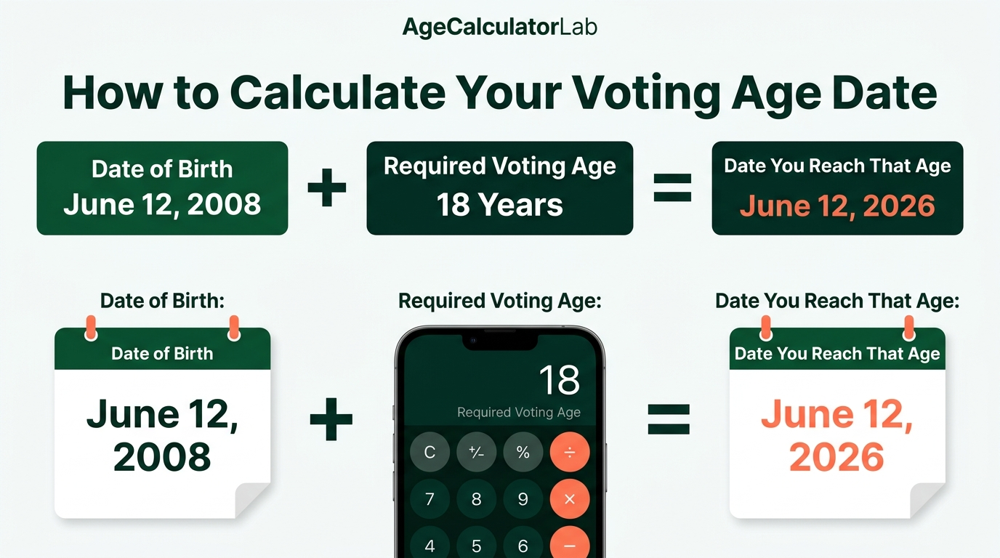
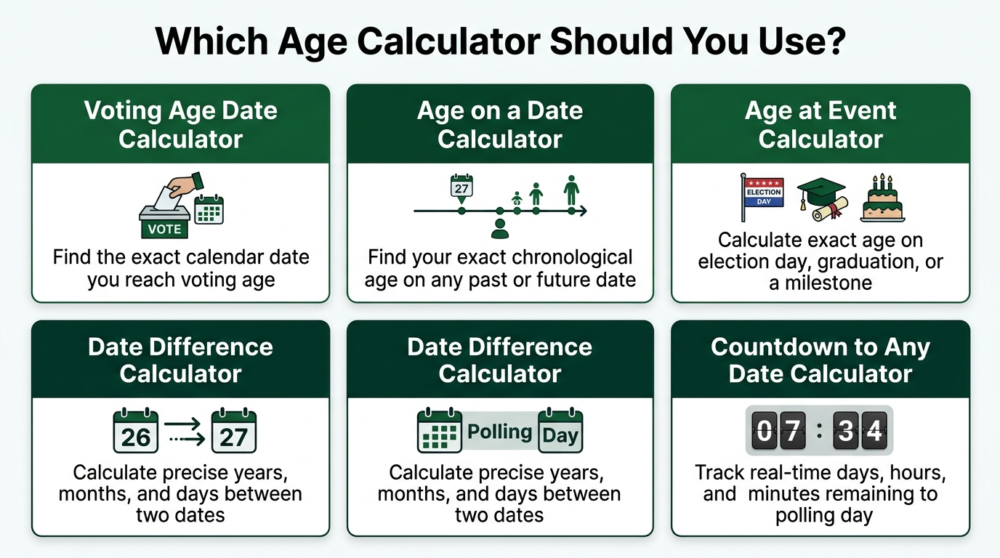

Quick Answer: When Do You Reach Voting Age?
You reach voting age on the exact calendar date you complete the required number of statutory years from your date of birth—most commonly your 18th birthday. To find this date instantly, enter your date of birth into our dedicated Voting Age Date Calculator and select your jurisdiction's threshold (18 in federal democracies such as the United States, United Kingdom, and India, or 16 in jurisdictions like Austria, Scotland, and Wales).
However, reaching your legal voting age is only half the equation. Reaching the age threshold qualifies you as an adult citizen, but casting a ballot requires being listed on the official electoral roll before election day. Because registration deadlines often close anywhere from a few days to a month prior to polling day, understanding both your milestone date and your administrative enrollment rules is vital for every first-time voter.
Calculate Your Exact Voting Age Date
Determine the precise calendar date, day of the week, and remaining countdown until you reach your statutory voting age threshold.
Calculate Your Voting Age Date →Calculate the Date You Reach Voting Age
The Voting Age Date Calculator eliminates manual calendar counting by evaluating your birth date against statutory age milestones. Rather than estimating rough day counts, the tool applies strict Gregorian calendar arithmetic to output the exact future date you achieve legal adult voting qualification.
Calculator Inputs and Outputs
- Date of Birth (Input): Your exact calendar birth date (day, month, and year).
- Required Voting Age (Input): The statutory voting age for your specific election (default 18, with options for 16, 17, or 21).
- Voting-Age Date (Result): The exact future calendar date when you attain that statutory age.
- Day of the Week (Result): The weekday on which that milestone occurs.
- Countdown & Duration (Result): The exact remaining days, months, and years until your voting eligibility date.
Practical Example: If an individual was born on November 18, 2008, and requires age 18, the tool outputs Wednesday, November 18, 2026. If an election is held on December 3, 2026, the voter knows they will be fully 18 years old on election day, but must monitor registration cutoff deadlines occurring earlier in November.
How Is Your Voting Age Date Calculated?
At its core, voting-age calculation follows statutory calendar arithmetic rather than continuous 24-hour elapsed duration. In standard civil law and common law systems, chronological age increases on each anniversary of your date of birth:
For example: Birth Date June 12, 2008 + 18 Calendar Years = June 12, 2026.

While the calculation appears straightforward, three mathematical and procedural nuances frequently impact date arithmetic:
- Calendar Day Preservation: The day and month remain identical to your birth record. A person born on October 14 retains October 14 as their milestone date regardless of whether intermediate years were leap years (366 days) or common years (365 days).
- Day Count vs. Milestone Counting: Chronological age does not advance every 365.2425 days. If you counted fixed blocks of 365 days, a person's calculated birthday would drift backwards by one day every leap year. Calendar systems instead step forward across whole annual boundaries. For duration measurements, users can complement this with our Date Difference Calculator.
- The Common-Law "Eve of Birthday" Rule: In historical Anglo-American common law, a person was deemed to reach a given age on the first moment of the day preceding the anniversary of birth. However, modern statutes and election codes virtually universally define eligibility by calendar day of birth.
The Date You Reach Voting Age — and Why Registration Deadlines Also Matter
A frequent misconception among first-time voters is assuming that reaching age 18 grants immediate, unrestricted access to the polling booth. In reality, modern voting systems operate on four distinct temporal checkpoints:
1. Voting Age (The Milestone)
This is the statutory age defined by constitutional or primary election statutes. It is purely biological and chronological. Once reached, you satisfy the age threshold required of electors.
2. The Registration Deadline (The Operational Cutoff)
Electoral administrative bodies must compile, audit, and finalize voter rolls before polling begins. Consequently, most election bodies enforce a registration deadline. Depending on the nation, state, or province, this cutoff can fall anywhere from 30 days before polling day to election eve. If your registration is not processed by this deadline, you may be ineligible to cast a ballot even if you are 18 on election day.
3. Election Day (Polling Day)
The specific date on which voting occurs. Under standard election law, your age is evaluated as of election day itself, not on the day you register. If you are 17 years and 11 months old on registration day, but will be 18 on or before polling day, you are legally entitled to register in advance in jurisdictions supporting preregistration.
4. Advance Registration & Preregistration
To prevent young citizens from being disenfranchised by early deadlines, many electoral bodies permit youth to submit their voter registration documents months or even years prior to their 18th birthday. Their application is processed and held in active reserve, transitioning to fully active status the moment their 18th birthday arrives.
Registration deadlines, identification requirements, and absentee procedures vary substantially across countries, provinces, and states. Always verify specific cutoff dates and statutory filing procedures with your official local election board or national electoral commission before an upcoming election.
Voting Age Timeline Example
To understand how these temporal points interact in practice, review the chronological progression below:
Consider a youth born on November 18, 2008. An election is scheduled for December 1, 2026, with voter registration closing on November 3, 2026:
- On November 3 (deadline), the prospective voter is still 17 years old.
- Because the election occurs on December 1, when the individual will be 18 years and 13 days old, they qualify under age rules on election day.
- If the jurisdiction permits advance registration, the individual submits their application before November 3. On November 18, their 18th birthday arrives, and their registration automatically activates in time for polling day.
What Is the Voting Age Around the World?
While 18 is the benchmark franchise age established by international conventions, statutory voting ages vary significantly depending on national constitutions, local government codes, and ongoing legislative reforms:
| Country / Region | Statutory Voting Age | Qualifying Criteria & Key Details | Registration Requirement |
|---|---|---|---|
| United States | Age 18 | Established by 26th Amendment (1971) for all federal, state, and local elections. Select states permit 17-year-olds to vote in primary elections if turning 18 by general election. | Voluntary; managed at state level. Over 20 states permit preregistration at age 16 or 17. |
| United Kingdom | Age 18 / Age 16 | Age 18 for UK Parliamentary general elections. Scotland lowered voting age to 16 for Scottish Parliament & local elections (2015). Wales lowered to 16 for Senedd & local elections (2020). | Individual Electoral Registration (IER). Eligible citizens can register from age 16 (or 14 in Scotland/Wales). |
| India | Age 18 | Governed by Article 326 of Constitution and Representation of the People Act, 1950 (lowered from 21 to 18 via 61st Amendment in 1989). | Mandatory enrollment on electoral roll via Form 6; 4 annual qualifying dates (Jan 1, Apr 1, Jul 1, Oct 1). |
| Canada | Age 18 | Governed by the Canada Elections Act for federal elections. Must be 18 on or before polling day. | National Register of Electors; advance registration permitted through Register of Future Electors at 14–17. |
| Australia | Age 18 | Commonwealth Electoral Act 1918. Compulsory voting for Australian citizens aged 18 and older. | Compulsory enrolment at 18; provisional enrolment permitted from age 16. |
| New Zealand | Age 18 | Electoral Act 1993. Citizens and permanent residents 18+ eligible to vote. | Compulsory enrolment from age 18; advance enrolment permitted at age 17. |
| Austria | Age 16 | Lowered national voting age to 16 in 2007 for federal, parliamentary, and European Parliament elections. | Automatic registration extracted directly from municipal population registers (Melderegister). |
| Germany | Age 16 / 18 | Age 16 for European Parliament elections and several federal state (Landtag) elections; Age 18 for Bundestag (federal parliament). | Automatic voter roll generation based on municipal civil registration (Meldewesen). |
| Brazil & Argentina | Age 16 (Voluntary) | Voting is voluntary for youth aged 16 to 17; becomes mandatory for citizens upon turning 18. | Mandatory biometric enrollment required before participating. |
Statutory Update Notice: Election legislation continues to evolve globally. Before participating in an election, consult your sovereign electoral authority or municipal election office for current qualification statutes.
What Is the Voting Age in India?
In the Republic of India, the right to vote is governed by Article 326 of the Constitution of India and the Representation of the People Act, 1950. Originally set at 21 years, the voting age was reduced to 18 by the historic Sixty-first Constitutional Amendment Act, 1988 (effective March 28, 1989).
The core legal condition states that a citizen must be not less than 18 years of age on the qualifying date of the electoral revision to be enrolled as an elector in a parliamentary or assembly constituency.
The Four Qualifying Dates System
Historically, India had only one qualifying date per year: January 1st. Under the old rules, if an Indian citizen turned 18 on January 2nd, they had to wait an entire calendar year before they could apply for voter enrollment. To eliminate this barrier, the Election Commission of India (ECI) amended the statutory rules in 2022 to introduce four quarterly qualifying dates every year:
- 1st January (First Quarter)
- 1st April (Second Quarter)
- 1st July (Third Quarter)
- 1st October (Fourth Quarter)
Under this modern framework, young citizens who turn 17 can submit an advance application (Form 6) through the official Voter Helpline App or the ECI voters portal (voters.eci.gov.in). Once submitted, the application is queued and registered on the electoral roll during the subsequent quarterly revision in which the applicant attains age 18.
When Can You Vote After Turning 18 in India?
It is vital to recognize that reaching age 18 in India does not grant voting rights by itself. The lawful progression involves five distinct stages:
- Attain Age 18: Reaching your 18th birthday milestone.
- Submit Form 6: Filing Form 6 for registration as a new elector, along with proof of age and residence.
- Field Verification: Verification by the local Booth Level Officer (BLO) and Electoral Registration Officer (ERO).
- Electoral Roll Inclusion: Publication of your name in the final or supplementary voter list of your assembly constituency.
- EPIC Card Issuance: Generation of your Elector's Photo Identity Card (EPIC) and voting number.
On polling day, the determining factor is having your name printed on the current electoral roll for your assigned polling booth. Merely presenting a birth certificate proving you are 18 without electoral roll inclusion will not permit you to cast a vote.
When Can You Vote in the United States?
In the United States, the voting age is codified by the Twenty-sixth Amendment to the United States Constitution, ratified in July 1971, which established that the right of citizens of the United States who are eighteen years of age or older to vote shall not be denied or abridged on account of age.
While the 26th Amendment guarantees the age threshold for federal elections, the administration of voter registration is delegated to the individual fifty states, creating substantial procedural divergence:
Key State Registration Differences in the US
- Preregistration at Age 16 or 17: More than 20 states—including California, Florida, Maryland, New York, and North Carolina—allow teenagers to preregister at 16 or 17 when obtaining a driver's license. The state holds the record and automatically registers the youth upon their 18th birthday.
- Registration Deadlines: Several states enforce strict voter registration deadlines up to 28 or 30 days prior to election day. Conversely, more than 20 states offer Same-Day Registration (SDR) or Election Day Registration, enabling an eligible 18-year-old to register and vote simultaneously at their polling place.
- Primary Election Voting at 17: In roughly 18 states (such as Illinois, Ohio, Virginia, and Maryland), citizens who are 17 years old are legally permitted to vote in congressional or presidential primaries if they will turn 18 on or before the date of the general election.
Always verify your state's registration requirements via your Secretary of State's elections division or vote.gov well before election season.
When Do I Turn 18? Common Search Scenarios
For youth anticipating their first milestone birthday, navigating calendar math and election rules creates several recurring questions:
When do I turn 18 if I was born in 2008?
You turn 18 in the calendar year 2026, on the exact anniversary day and month of your birth. For example, if you were born on March 4, 2008, you turn 18 on March 4, 2026. If you were born on October 19, 2008, you reach 18 on October 19, 2026. Use our Birthday Age Calculator to explore your upcoming milestone birthdays.
When do I turn 18 if I was born in 2009?
You turn 18 in the calendar year 2027 on your birth day and month. For instance, a birth date of January 15, 2009, yields an 18th birthday milestone on January 15, 2027. You can calculate the exact days remaining until that date using our Countdown to Any Date Calculator.
How do I calculate my 18th birthday?
Add 18 whole years to your birth year while keeping your birth month and day intact. For automated precision, our Add Years to Date Calculator lets you add 18 years to any calendar date instantly.
Can I vote if I turn 18 on election day?
Yes. If your 18th birthday lands exactly on polling day, you meet the constitutional age requirement. As long as you completed advance registration (or reside in a jurisdiction with same-day registration), you are fully entitled to vote on election day.
Can I register before I turn 18?
Yes, in many jurisdictions. Preregistration programs exist specifically so young citizens do not miss voter registration cutoffs while waiting for their 18th birthday to arrive.
What if I turn 18 after the registration deadline?
If you turn 18 between the voter registration deadline and election day, most jurisdictions allow you to submit an advance registration form prior to the deadline, because the statutory eligibility test assesses your age on election day, not on the filing date.
Voting-Age Dates by Birth Year Cohort
The table below provides a quick milestone reference for recent youth birth cohorts reaching age 18 between 2024 and 2028:
| Birth Date Sample | Birth Year Cohort | Exact Date Turning 18 | Day of the Week | First Federal Election Cycle Window |
|---|---|---|---|---|
| January 1, 2006 | 2006 Cohort | January 1, 2024 | Monday | 2024 General Election Cycles |
| July 15, 2006 | 2006 Cohort | July 15, 2024 | Monday | 2024 General Election Cycles |
| January 1, 2007 | 2007 Cohort | January 1, 2025 | Wednesday | 2025 Off-Year / Local Elections |
| August 20, 2007 | 2007 Cohort | August 20, 2025 | Wednesday | 2025 Municipal & Regional Elections |
| January 1, 2008 | 2008 Cohort | January 1, 2026 | Thursday | 2026 Midterm & State Assembly Elections |
| June 12, 2008 | 2008 Cohort | June 12, 2026 | Friday | 2026 Midterm & General Elections |
| November 18, 2008 | 2008 Cohort | November 18, 2026 | Wednesday | 2026 General Elections (Post-Nov 18) |
| December 31, 2008 | 2008 Cohort | December 31, 2026 | Thursday | 2027 Local / 2028 National Cycles |
| January 1, 2009 | 2009 Cohort | January 1, 2027 | Friday | 2027 Legislative & Municipal Cycles |
| September 10, 2009 | 2009 Cohort | September 10, 2027 | Friday | 2027 Regional / 2028 Presidential Cycles |
| January 1, 2010 | 2010 Cohort | January 1, 2028 | Saturday | 2028 Presidential & Parliamentary Elections |
For custom birth dates not listed above, enter your specific day, month, and year into the Voting Age Date Calculator to retrieve your individualized milestone calendar date.
Special Cases When Calculating Voting Age
Certain calendar edge cases require specific statutory rules and legal interpretations:
1. Leap Year Birthdays (February 29)
Individuals born on February 29 during a leap year (such as 2008) face a unique situation when turning 18: eighteen years later (2026) is a common year with only 28 days in February. Under statutory interpretation in the United Kingdom, United States, and India, a leap-day baby is legally recognized as reaching their majority on March 1st of a non-leap year. For an in-depth breakdown of leap-day calculations, review our February 29 Birthday Timeline Guide and test leap year occurrences with our Leap Year Calculator.
2. Birthdays Landing Exactly on Polling Day
If your 18th birthday falls on election day itself, election law uniformly treats you as reaching adult age on that date. As long as you filed your advance registration by the cutoff date (or utilize same-day registration at the poll), you are entitled to cast a ballot.
3. Birthdays Occurring Days After Registration Closure
If registration closes on October 10 and you turn 18 on October 25, with election day on November 3, you can register prior to October 10 in all jurisdictions supporting advance registration. The administrative checklist looks at your anticipated age on November 3.
4. Sub-National Voting Age Variations
In federal and devolved countries, different elections within the same city may feature different age thresholds. For example, a 16-year-old living in Edinburgh can legally vote in Scottish Parliament and local council elections, but must wait until age 18 to vote for their Member of Parliament in Westminster general elections. Similarly, in Germany, a 16-year-old can vote in European Parliament elections, but must be 18 to vote for the federal Bundestag.
How Old Will I Be on Election Day?
While the Voting Age Date Calculator starts with your birth date and tells you when you achieve eligibility, many voters encounter the inverse question: "An election is happening on November 3, 2026—how old will I be on that exact date down to the day?"
If you already know the election date, the proper tool is the Age on a Date Calculator. This tool accepts your birth date and the designated target date, computing your exact chronological age in completed years, months, and days. To visualize your progression across multiple upcoming milestones, explore our Age Timeline Calculator.
How Old Will I Be on an Election or Registration Date?
Tracking milestone events often requires comparing your birth date against multiple scheduled civic dates, such as the date voter registration rolls open, the date absentee ballots are mailed, or historic election dates. For event-driven chronological planning, use the Age at Event Calculator. To determine your formal chronological age formatted for official administrative filings, consult our Chronological Age Calculator.
Which Age Calculator Should You Use?
Age Calculator Lab provides specialized tools across Universal Chronology, Date Lab, and Milestone Planning. Choose the calculator whose inputs match your specific civic planning scenario:

| What You Want to Know | Inputs Required | Best Calculator | Direct Tool Link |
|---|---|---|---|
| "What exact calendar date do I turn 18 or reach voting age?" | Date of birth + Target voting age (e.g. 18 or 16) | Voting Age Date Calculator | Open Voting Age Tool → |
| "How old will I be on election day or a specific future date?" | Date of birth + Future election date | Age on a Date Calculator | Open Age on Date Tool → |
| "How old was I at a past election or milestone civic event?" | Date of birth + Event milestone date | Age at Event Calculator | Open Age at Event Tool → |
| "How many days, hours, and minutes remain until election day?" | Target election date & time | Countdown to Any Date Calculator | Open Countdown Tool → |
| "How many days between my birthday and the voter registration deadline?" | Start date + End date | Days Between Dates Calculator | Open Days Between Dates → |
| "What is the exact span in years, months, and days between two civic dates?" | Two calendar dates | Date Difference Calculator | Open Date Difference Tool → |
Related Date Calculations for Election Planning
Civic and milestone planning frequently intersects with broader date mathematics. Our Date Lab suite offers specialized tools for every timing question:
Countdown to Election Day
Track real-time calendar days, hours, and minutes remaining until polls open in your voting precinct.
Use Countdown Calculator →Days Between Dates
Count exact calendar days, excluding weekends or bank holidays, between your birthday and the close of voter registration.
Calculate Days Between Dates →Add Years to Date
Add statutory year increments (e.g., 18 or 21 years) to evaluate civil majority, candidacy ages, and legal milestones.
Add Years to Date →Add Days to Date
Project statutory deadlines by adding statutory day windows (e.g. 30 days prior to polling day).
Add Days to Date →Driving Age Date Calculator
Compare your voting age milestone with driving eligibility timelines across regional jurisdictions.
Check Driving Age Dates →Driving Age Eligibility Guide
Read our companion guide explaining statutory licensing ages, learner permits, and milestone timelines.
Read Driving Age Guide →Common Mistakes to Avoid When Planning Your First Vote
1. Waiting Until Your 18th Birthday to Register
Many prospective voters mistakenly wait until their 18th birthday to begin voter registration. If registration closed two weeks earlier, you will miss the election even though you are legally of age on polling day. Always look into advance registration months ahead.
2. Assuming Age on Registration Day Is Tested
Citizens often delay registering because they are currently 17. In most systems, the statutory test evaluates your age on election day. If you will be 18 on election day, you can generally register in advance.
3. Assuming Registration Happens Automatically
In countries like the US, UK, and India, turning 18 does not automatically place you on the electoral roll. You must complete an application (such as Form 6 in India or a voter registration form in the US).
4. Overlooking Residency & Address Requirements
Electoral rolls are organized by residential precincts. Moving for university, work, or family requires updating your registered address before the jurisdiction's change-of-address cutoff date.
5. Neglecting Voter Identification Criteria
Reaching voting age allows you to vote, but casting a ballot often requires presenting accepted photo identification (e.g. Voter Authority Certificate in the UK, state ID in the US, or EPIC in India).
Frequently Asked Questions
What is the standard voting age in most democracies?
The standard voting age is 18 years in the majority of modern democracies, including the United States, the United Kingdom, India, Canada, Australia, and New Zealand. Several jurisdictions, including Austria, Scotland (for Scottish parliamentary and local elections), Wales, Germany (for European Parliament elections), and Brazil, allow voting at age 16 for specific elections.
How do I calculate the exact calendar date I reach voting age?
Your voting-age date is calculated by adding the required statutory number of calendar years (typically 18 years) to your exact date of birth. For example, if you were born on June 12, 2008, adding 18 calendar years yields June 12, 2026. Leap-day births (February 29) are legally recognized as turning 18 on March 1 in most common-law jurisdictions.
Can I register to vote before turning 18?
Yes, many democratic systems explicitly permit advance registration or preregistration at age 16 or 17. For instance, in the United States, over 20 states and Washington D.C. allow preregistration at 16 or 17. In India, under the Election Commission of India's four quarterly qualifying dates system, youth who turn 17 can submit Form 6 in advance.
Can I vote if my 18th birthday falls on election day itself?
Yes, in virtually all major democracies, the statutory requirement tests your age on polling day. If you reach the required voting age on election day, you satisfy the age criterion. However, you must have completed voter registration by your jurisdiction's required deadline, or utilize same-day registration where permitted.
Can I vote if I turn 18 after the registration deadline but before election day?
In jurisdictions with advance voter registration, yes. You register prior to the deadline as a future voter, and your active status takes effect on your 18th birthday before or on polling day. However, in jurisdictions without advance registration or same-day registration, missing the voter cutoff deadline may prevent you from casting a ballot.
Does turning 18 automatically register me on the electoral roll?
In countries like the United States, the United Kingdom, and India, voter registration is generally not automatic upon turning 18; you must actively submit a registration form or enroll. By contrast, some European countries automatically pull eligible citizens from municipal civil registries. Always verify your enrollment status with your local electoral board.
How does a leap year (February 29) affect my 18th birthday calculation?
If you were born on February 29 of a leap year (such as 2008), 18 years later falls in a common year (such as 2026), which has only 28 days in February. Under statutory interpretation and common law across the US, UK, and India, a person born on February 29 legally attains their majority on March 1 of a non-leap year.
What are the rules and qualifying dates for voting age in India?
Under Article 326 of the Constitution of India and the Representation of the People Act, 1950, the voting age is 18. Following election law amendments, the Election Commission of India offers four annual qualifying dates: January 1, April 1, July 1, and October 1. Eligible citizens apply using Form 6 via the Voter Helpline app or the official portal.
What are the voting age rules and state deadlines in the United States?
The 26th Amendment guarantees US citizens aged 18 and older the right to vote in federal elections. However, voter registration deadlines are determined by individual states, ranging from 30 days prior to election day down to same-day voter registration at the polling place on election day.
Does the Voting Age Date Calculator confirm my legal eligibility to vote?
No. The calculator performs exact chronological calendar math to determine the calendar date you reach your statutory birthday milestone. Legal eligibility, citizenship criteria, residency duration, identity verification, and registration status are administered exclusively by official statutory election authorities.
Which tool should I use to calculate my age on election day?
To determine your exact chronological age on a specific upcoming election day, use the Age on a Date Calculator or the Age at Event Calculator. If you want to know the exact calendar day you turn 18, use the Voting Age Date Calculator.
How do I count how many days remain until I can vote?
To find out how many days remain between today and your voting-age date or an upcoming election day, use the Days Between Dates Calculator or the Countdown to Any Date Calculator on Age Calculator Lab.
Final Takeaways: Your First-Time Voter Checklist
Planning your first vote is a two-step process that combines chronological timing with administrative action:
- Know Your Milestone Date: Use the Voting Age Date Calculator to identify the exact calendar date you reach age 18.
- Identify Upcoming Election Dates: Check your local election authority calendar to see whether an election falls on or after your 18th birthday.
- Find the Voter Registration Cutoff: Determine the registration deadline for that election. Remember that this cutoff may be weeks before polling day.
- Take Advantage of Advance Preregistration: If your jurisdiction allows registration at age 16 or 17, complete your voter application early so your active voting status unlocks automatically.
- Confirm Your Polling Place & ID Requirements: Ensure you have the required photo identification, polling booth assignment, or postal ballot application prepared ahead of time.
Internal Link Audit & Verification
Below is the complete audit of internal links embedded in this guide, verified against the current live inventory of Age Calculator Lab:
| Source Section | Target URL | Anchor Text | Reason for Link | Verified Live? |
|---|---|---|---|---|
| Quick Answer | ../../tools/voting-age-date-calculator/ |
Voting Age Date Calculator | Primary tool CTA in first 100 words | Yes (Live) |
| Calculate Your Date | ../../tools/voting-age-date-calculator/ |
Voting Age Date Calculator | Explains input/output structure | Yes (Live) |
| How It Is Calculated | ../../tools/date-difference-calculator/ |
Date Difference Calculator | Alternative duration math comparison | Yes (Live) |
| Search Scenarios | ../../tools/birthday-age-calculator/ |
Birthday Age Calculator | Calculating 18th birthday variants | Yes (Live) |
| Search Scenarios | ../../tools/countdown-to-date-calculator/ |
Countdown to Any Date Calculator | Countdown to 18th birthday | Yes (Live) |
| Search Scenarios | ../../tools/add-years-to-date-calculator/ |
Add Years to Date Calculator | Adding 18 calendar years to birth date | Yes (Live) |
| Birth Year Cohort | ../../tools/voting-age-date-calculator/ |
Voting Age Date Calculator | Direct calculator link for custom dates | Yes (Live) |
| Special Cases | ../../articles/february-29-birthday-timeline/ |
February 29 Birthday Timeline Guide | Explains leap-day birthday legal rules | Yes (Live) |
| Special Cases | ../../tools/leap-year-calculator/ |
Leap Year Calculator | Leap year identification logic | Yes (Live) |
| Age on Election Day | ../../tools/age-on-date-calculator/ |
Age on a Date Calculator | Calculate chronological age on polling day | Yes (Live) |
| Age on Election Day | ../../tools/age-timeline-calculator/ |
Age Timeline Calculator | Visualizing multiple future milestones | Yes (Live) |
| Age at Event | ../../tools/age-at-event-calculator/ |
Age at Event Calculator | Age on specific civic event dates | Yes (Live) |
| Age at Event | ../../tools/chronological-age-calculator/ |
Chronological Age Calculator | Official chronological age documentation | Yes (Live) |
| Which Calculator to Use | ../../tools/days-between-dates-calculator/ |
Days Between Dates Calculator | Day count between birthday & cutoff | Yes (Live) |
| Related Calculators | ../../tools/add-days-to-date-calculator/ |
Add Days to Date | Projecting statutory filing windows | Yes (Live) |
| Related Calculators | ../../tools/driving-age-date-calculator/ |
Driving Age Date Calculator | Companion legal milestone comparison | Yes (Live) |
| Related Calculators | ../../articles/driving-age-eligibility-date/ |
Driving Age Eligibility Guide | Companion legal milestone guide | Yes (Live) |